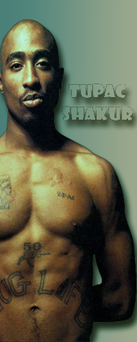
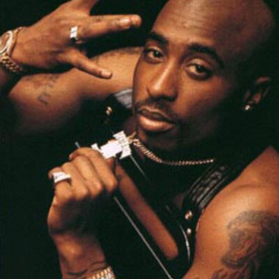

Slide in on Scroll
['Pac talking] Big Syke, Newt, Hank Beugard, Big Sur (yeah) Y'all know how this shit go (y'know) {All Eyez On Me} Motherfuckin O.G. Roll up in the club and shit (is that right?) {All Eyez On Me} {All Eyez On Me} But you know what?
I bet you got it twisted you don't know who to trust So many playa hating niggaz tryin to sound like us Say they ready for the funk, but I don't think they knowin Straight to the depths of hell is where those cowards goin
Well are you still down nigga? Holla when you see me
And let these devils be sorry for the day they finally freed me I got a caravan of niggaz every time we ride (every time we ride) Hittin motherfuckers up when we pass by (when we pass by) Until I die; live the life of a boss playa Cause even when I'm high, fuck with me and get crossed later The futures in my eyes, cause all I want is cash and thangs A five-double-oh - Benz flauntin flashy rings, uhh
Bitches pursue me like a dream Been know to disappear before your eyes just like a dope fiend It seems - my main thang was to be major paid The game sharper than a motherfuckin razor blade Say money bring bitches, bitches bring lies One nigga's gettin jealous, and motherfuckers died Depend on me like the first and fifteenth They might hold me for a second, but these punks won't get me We got foe niggaz, and lowriders, in ski masks screamin Thug Life every time they pass {All Eyez On Me}
Live the life of a thug nigga, until the day I die live the life of a boss playa {All Eyez On Me} cause even gettin high.. ..{All Eyez On Me} Live the life of a thug nigga, until the day I die live the life of a boss playa, cause even gettin high..

Heeyyy, to my nigga 'Pac.. So much trouble in the world, nigga Can't nobody feel your pain The world's changin everyday, times moving faaast My girl said I need a raise, how long will she last? I'm caught between my woman, and my pistol, and my chips Triple beam, got some smokers on, whistle as I dip I'm lost in the land with no plan, livin life flawless Crime boss, contraband, let me toss this Needy hookers got a lot of nerve, let my bucket swerve I'm takin off from the curb The nervousness neglect make me pack a tec Devoted to servin this, Moet and paaayyy-checks Like Akai satellite nigga I'm forever ballin It ain't right parasites triggers and fleas crawlin Sucker duck and get busted, no emotion

My devotion is handlin my business nigga keep on coastin Where you goin I been there came back as lonely homie Steady flowin against the grain niggaz STILL don't know me It's about the money in this rap shit, this crap shit It ain't funny niggaz don't even know how to act - shit! What can I do, what can I say, is there another way? Blunts and gin all day, twenty-fo' parlay My little homie G, can't you see, I'm busta free Niggaz can't stand me - all eyes on me! [Chorus Two: 2Pac] I live the life of a thug nigga, until the day I die Live the life as a boss playa {All Eyez On Me} cause even gettin high {All Eyez On Me} I live the life of a thug nigga, until the day I die live the life as a boss playa {All Eyez On Me} cause even gettin high
The feds is watchin, niggaz plottin to get me
Will I survive, will I die? Come on let's picture the possibility
Givin me charges, lawyers makin a grip
I told the judge I was raised wrong, and that's why I blaze shit
Was hyper as a kid, cold as a teenager
On my mobile callin big shots on the scene major
Packing hundreds in my drawers; fuck the law Bitches I fuck with a passion, I'm livin rough and raw
Catchin cases at a fast rate, ballin in the fast lane
Hustle til the mornin, never stopped until the cash came
Live my life as a thug nigga, until the day I die
Live my life as a boss playa, cause even gettin high
these niggaz got me tossin shit
I put the top down, now it's time to floss my shit
Keep your head up nigga, make these motherfuckers suffer
Up in the Benz burnin rubber
The money is mandatory, the hoes is fully strapped
This criminal lifestyle, equipped with the bulletproof vest
Make sure your eyes is on the meal ticket
Get your money motherfucker let's get rich and we'll kick it
All eyes on me!
[Chorus Three: 2Pac]
Bitches I fuck with a passion, I'm livin rough and raw
Catchin cases at a fast rate, ballin in the fast lane
Hustle til the mornin, never stopped until the cash came
Live my life as a thug nigga, until the day I die
Live my life as a boss playa, cause even gettin high
these niggaz got me tossin shit
I put the top down, now it's time to floss my shit
Keep your head up nigga, make these motherfuckers suffer
Up in the Benz burnin rubber
The money is mandatory, the hoes is fully strapped
This criminal lifestyle, equipped with the bulletproof vest
Make sure your eyes is on the meal ticket
Get your money motherfucker let's get rich and we'll kick it
All eyes on me!
[Chorus Three: 2Pac]
I live the life as a thug nigga, until the day I die Live the life as a boss playa {All Eyez On Me} cause even gettin high.. ..{All Eyez On Me}
I live the life as a thug nigga, until the day I die Live the life as a boss playa {All Eyez On Me} cause even gettin high.. ..{All Eyez On Me}
Pay attention my niggaz